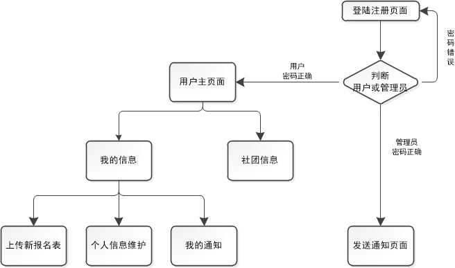

一、E-CLUB的创意来源
华东师大共有一百多个社团，每一年社团招新、巡礼的时候都是盛况非凡。但这也存在着很多问题，这么多的社团，摊位分布又很广，学生往往看花了眼，不知道有哪些社团或者找不到想要报名的社团，报名表有时候不是当场填，填完后交表也非常麻烦。而从社团负责人方面来说，回收表格、发送面试通知都极为不方便。而我们发现，虽然华师大有社团联合会的存在，但并没有官方的网站，也很难搜索所有的社团信息。因此我们小组决定制作一个web APP，集合华师大所有的社团，不仅可以向学生们宣传各大社团的APP，也方便学生浏览和网上报名，还可能够通过社团管理员批量发送通知，降低管理成本。
二、E-CLUB的功能
E-CLUB在逻辑结构方面具有两个维度：一是管理员端，使用管理员账号和密码登录后，可以进行查询报名同学、群发邮件、管理社团信息、查看学生的意见建议等操作；二是学生端，普通用户通过注册后登录，可以进行查看社团信息，完善个人基本信息，并进行报名、查看通知等相关操作，并且还能通过报名时所填的邮箱收到社团通知。这两个维度同时存在，形成了社团和学生之间简便、快捷的交互模式。
